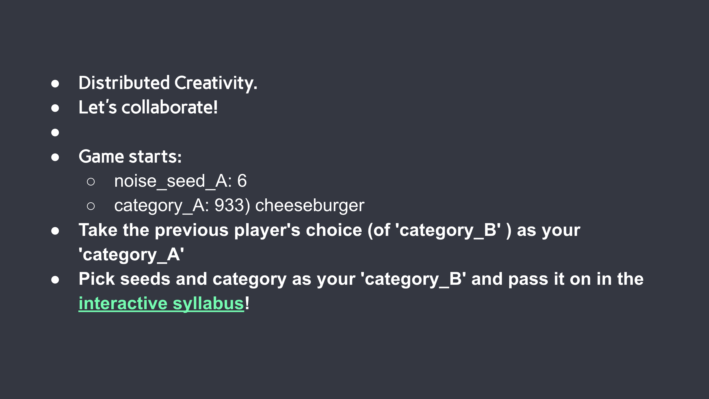

Distributed Creativity
November 2019
Overview
* Still an early exploration of ideas.
“Distributed Creativity“ is an experiment trying to exam ad criticise the definition of creativity, not only human's creativity but also machines'. The experiment runs as an artist workshop, in which the participants first learn the basics of Artificial Intelligence / machine learning and then driven by a set of guidance and rules to collaborate with other peer participants under the AI’s assistance. None of the individual participant nor the AI (or the artist) is driving the creative process solely but every of us, both the human and machine(and probably more importantly, the interaction between human and computer), are complementary. The contributions are distributed, so are the creation and the creative process.
Here the experiment with my students of Artificial Intelligence Arts class at IMA, NYU Shanghai:
How did I came with the Idea?
The idea of "Distributed Creativity" came from a fun exploration of BigGAN and some discussion on social networks. On this autumn afternoon with bright sunshine and golden leaves falling, I figured out how to interpolate bigGAN and obtain a smooth transformation from one generated image to another, all by a smooth walk in the latent space. I got some video like this:
Or from this vase to another!
I posted it on my Wechat, got the most questions about how did I generate the images in between and what kind of parameters I am using to make/guide the smooth transformation while I didn't control it at all. All my input to the system is the starting and ending point, all the rest are decided by the algorithm. That's how I started to think that the creative process could be distributed. And I, as a creator, didn't do much more (important) work than the AI.
Inspired by collaborative art, I want to push the boundary further. What if I make the few-enough decisions more distributed and introduce in more "decision-nodes", here is a ruleset based collaborative art project I created in my AI Arts class at NYU Shanghai: Distributed Creativity.
And the rulesets we've been using:

More explorations on the way!